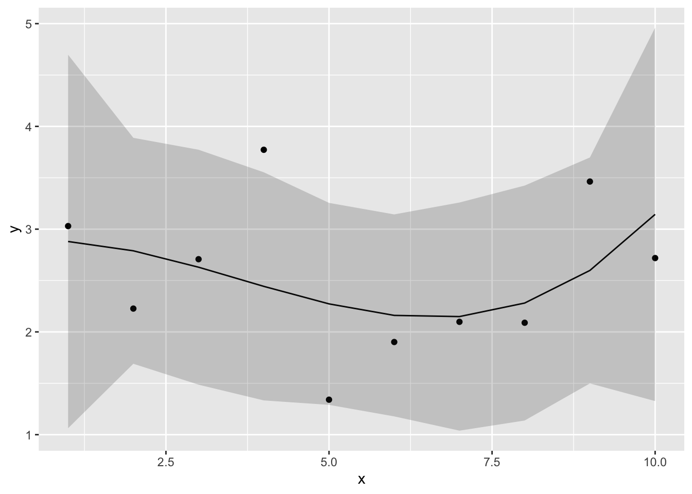
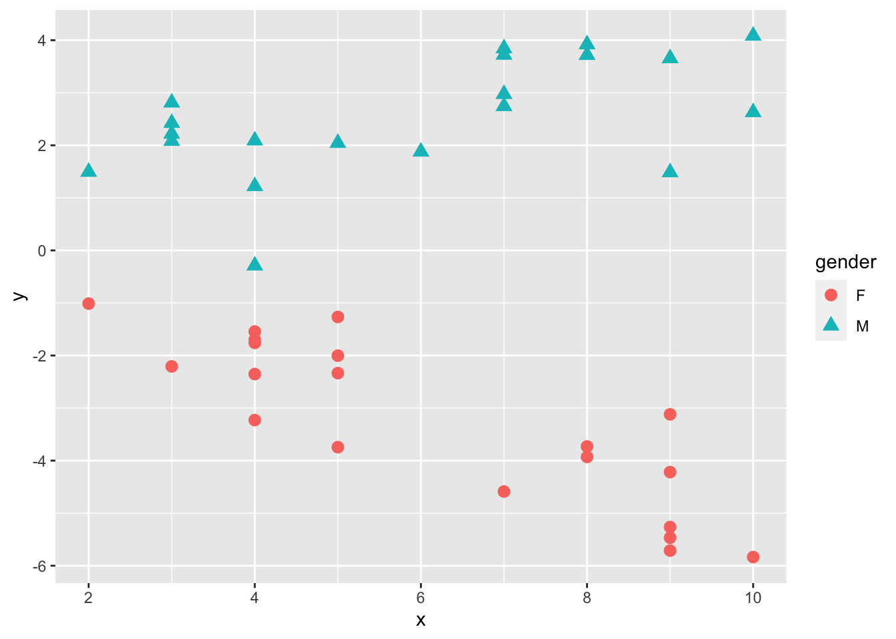
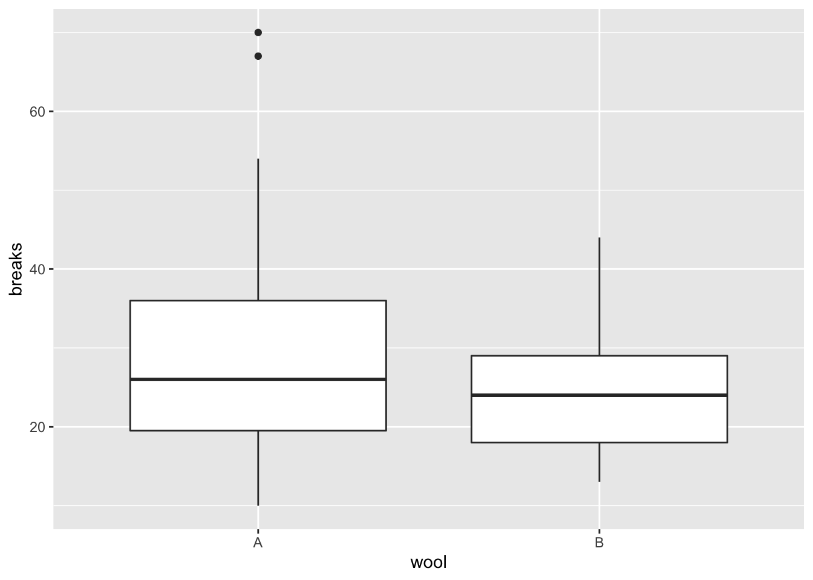
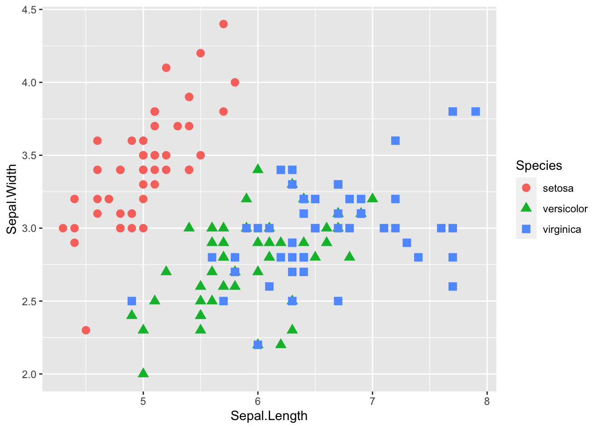
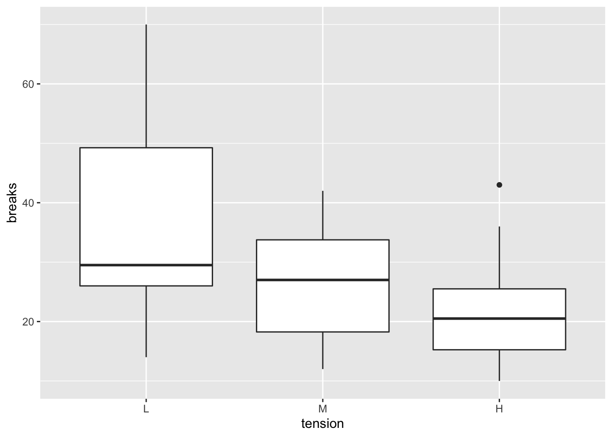
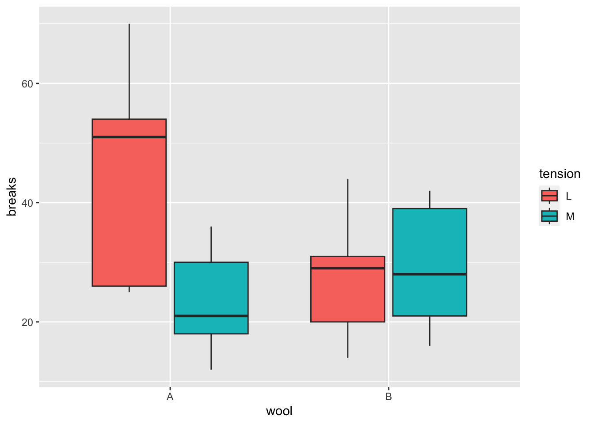

Chapter 10 線形モデルの注意点
前の章で、線形モデルの全体像を見てきた。ここでは、線形モデルを扱う上で注意すべき点について見ていく。
10.2 線形モデルに含まれる統計解析
線形モデルとは特定の解析を指すものではなく、正規分布を扱う様々な統計解析を包括的に扱う統計モデルである。例えば、基礎の統計学でも学んできたt検定や分散分析も線形モデルの中に含まれる。予測変数の種類や個数の違いによって、線形モデルは以下のそれぞれの統計解析と一致する。
| 分析 | 予測変数 | 予測変数の個数 |
|---|---|---|
| t検定 | 二値(0 or 1) | 1個 |
| 分散分析 | 二値 | 2個以上 |
| 共分散分析 | 二値及び連続量 | 二値が2個以上、連続量が1個以上 |
| 重回帰分析 | 連続量（二値を含んでも可） | 2個以上 |
10.3 予測変数がカテゴリカル変数の場合
前の章では、予測変数が量的変数の場合を例として扱ったが、予測変数はカテゴリカル変数（質的変数）でも構わない。ただし、予測変数がカテゴリカル変数の場合は、予測変数を0か1のどちらかの値を取るダミー変数(dummy variable)に変換する必要がある。
Rに入っているsleepデータを少し変えたもの使って、カテゴリカル変数を予測変数に含む線形モデルの解析をしてみよう。
dat = sleep #データを別の名前datに保存し直す
#変数の名前を変える
dat$x = ifelse(dat$group == 1, "control", "treatment")
dat$y = dat$extra
dat = dat[,c("y", "x")]
head(dat) #datの中身を確認する## y x
## 1 0.7 control
## 2 -1.6 control
## 3 -0.2 control
## 4 -1.2 control
## 5 -0.1 control
## 6 3.4 controlxはグループを意味する変数で、カテゴリカル変数である（統制群controlもしくは実験群treatment）。まずこれを、「treatmentなら1、controlなら0」とする新たな変数x_1を作る。
## y x x_1
## 1 0.7 control 0
## 2 -1.6 control 0
## 3 -0.2 control 0
## 4 -1.2 control 0
## 5 -0.1 control 0
## 6 3.4 control 0ifelse()関数は、ifelse(XXX, A, B)と表記することで、「XXXの条件に当てはまればA、当てはまらなければB」という処理をしてくれる。ここでは、予測変数のベクトルxについて、treatmentならば1, それ以外なら0に変換し、0か1を取る変数\(x_{1}\)を新たに作った。
この\(x_{1}\)がダミー変数である。
解析に用いるモデルを確認すると、以下のようになる。
\[ \begin{equation} \mu = \alpha + \beta x_{1} \\ \tag{1}\\ y \sim \text{Normal}(\mu, \sigma) \end{equation} \]
\(x_{1}\)は0か1のどちらかを取る変数で、\(x_{1} = 0\)のとき、つまり統制群のとき、応答変数の予測値は\(\mu = \alpha\)となる。\(x_{1} = 1\)のとき、つまり実験群のとき、応答変数の予測値は\(\mu = \alpha + \beta\)となる。すなわち、切片\(\alpha\)は統制群のときの効果、傾き\(\beta\)は実験群の時に加わる実験群特有の効果を意味する。
lm()を使って、上のモデル式のパラメータの推定をしよう。
##
## Call:
## lm(formula = y ~ 1 + x_1, data = dat)
##
## Residuals:
## Min 1Q Median 3Q Max
## -2.430 -1.305 -0.580 1.455 3.170
##
## Coefficients:
## Estimate Std. Error t value Pr(>|t|)
## (Intercept) 0.7500 0.6004 1.249 0.2276
## x_1 1.5800 0.8491 1.861 0.0792 .
## ---
## Signif. codes: 0 '***' 0.001 '**' 0.01 '*' 0.05 '.' 0.1 ' ' 1
##
## Residual standard error: 1.899 on 18 degrees of freedom
## Multiple R-squared: 0.1613, Adjusted R-squared: 0.1147
## F-statistic: 3.463 on 1 and 18 DF, p-value: 0.079192つの群間で平均値を比較するときにはt検定がよく使われる。t.test()関数を使って\(x_{1}=0\)と\(x_{1}=1\)との間で\(y\)の値の平均値を比較したときのt値及びp値の結果が、lm()の傾きのt値及びp値と一致することを確認しよう。
##
## Welch Two Sample t-test
##
## data: y by x_1
## t = -1.8608, df = 17.776, p-value = 0.07939
## alternative hypothesis: true difference in means between group 0 and group 1 is not equal to 0
## 95 percent confidence interval:
## -3.3654832 0.2054832
## sample estimates:
## mean in group 0 mean in group 1
## 0.75 2.33lm()の傾きの検定は、「傾きがゼロである」という帰無仮説を検定している。傾きの係数が意味することは、予測変数\(x_{1}\)が1単位増えたときの応答変数\(y\)の変化量であった。傾きの検定は、「\(x_{1}=0\) から \(x_{1}=1\) に変化することによって、 \(y\) が上昇（下降）するか（傾きがゼロではないか）」を検定している。要は、「\(x_{1}=0\)と\(x_{1}=1\)の間で\(y\)の値に差があるか」を検定しているのと論理的に同じである。
このように、予測変数が1つで、予測変数が二値（0もしくは1）であるときの線形モデルは、t検定に対応する。
10.4 グループが複数ある場合
先ほどの例は、統制群と実験群の二つのグループの場合であった。例えば実験で統制群、実験群1、実験群2といったように三つ以上のグループを設定した場合は、どうダミー変数を作成すればよいのか？
Rに入っているPlantGrowthを例として見ていこう。例えばやり方としては、以下の方法がある。
dat = PlantGrowth
dat$y = dat$weight #名前をyに変える
dat$x_c = ifelse(dat$group == "ctrl", 1, 0)
dat$x_t1 = ifelse(dat$group == "trt1", 1, 0)
dat$x_t2 = ifelse(dat$group == "trt2", 1, 0)
dat## weight group y x_c x_t1 x_t2
## 1 4.17 ctrl 4.17 1 0 0
## 2 5.58 ctrl 5.58 1 0 0
## 3 5.18 ctrl 5.18 1 0 0
## 4 6.11 ctrl 6.11 1 0 0
## 5 4.50 ctrl 4.50 1 0 0
## 6 4.61 ctrl 4.61 1 0 0
## 7 5.17 ctrl 5.17 1 0 0
## 8 4.53 ctrl 4.53 1 0 0
## 9 5.33 ctrl 5.33 1 0 0
## 10 5.14 ctrl 5.14 1 0 0
## 11 4.81 trt1 4.81 0 1 0
## 12 4.17 trt1 4.17 0 1 0
## 13 4.41 trt1 4.41 0 1 0
## 14 3.59 trt1 3.59 0 1 0
## 15 5.87 trt1 5.87 0 1 0
## 16 3.83 trt1 3.83 0 1 0
## 17 6.03 trt1 6.03 0 1 0
## 18 4.89 trt1 4.89 0 1 0
## 19 4.32 trt1 4.32 0 1 0
## 20 4.69 trt1 4.69 0 1 0
## 21 6.31 trt2 6.31 0 0 1
## 22 5.12 trt2 5.12 0 0 1
## 23 5.54 trt2 5.54 0 0 1
## 24 5.50 trt2 5.50 0 0 1
## 25 5.37 trt2 5.37 0 0 1
## 26 5.29 trt2 5.29 0 0 1
## 27 4.92 trt2 4.92 0 0 1
## 28 6.15 trt2 6.15 0 0 1
## 29 5.80 trt2 5.80 0 0 1
## 30 5.26 trt2 5.26 0 0 13種類のダミー変数を作った。それぞれ、x_cは「ctrlならば1、それ以外なら0」、x_t1は「trt1ならば1、それ以外なら0」、x_t2は「trt2ならば1、それ以外なら0」となっている。これら3つのダミー変数を使ってモデルを作り、パラメータを推定する。
\[ \begin{equation} \mu = \beta_{c} x_{c} + \beta_{t1} x_{t1} + \beta_{t2} x_{t2} \\ \tag{2} y \sim \text{Normal}(\mu, \sigma) \end{equation} \]
ここで注意が必要なのは、今回のモデルでは切片\(\alpha\)が省かれていることである。その理由は後ほど説明する。
モデルをlm()で記述して、推定してみよう。以下のプログラムを実行する。
＊lm(data = dat, y ~ x_c + x_t1 + x_t2 - 1)の中に-1が加わっている点に注意。これは「モデルから切片を除け」という命令である。
dat$y_2 = (dat$y - mean(dat$y))/sd(dat$y) #yを標準化しておく
result = lm(data = dat, y_2 ~ x_c + x_t1 + x_t2 - 1)
summary(result)##
## Call:
## lm(formula = y_2 ~ x_c + x_t1 + x_t2 - 1, data = dat)
##
## Residuals:
## Min 1Q Median 3Q Max
## -1.52740 -0.59613 -0.00856 0.37472 1.95239
##
## Coefficients:
## Estimate Std. Error t value Pr(>|t|)
## x_c -0.05847 0.28113 -0.208 0.8368
## x_t1 -0.58757 0.28113 -2.090 0.0462 *
## x_t2 0.64604 0.28113 2.298 0.0295 *
## ---
## Signif. codes: 0 '***' 0.001 '**' 0.01 '*' 0.05 '.' 0.1 ' ' 1
##
## Residual standard error: 0.889 on 27 degrees of freedom
## Multiple R-squared: 0.2641, Adjusted R-squared: 0.1824
## F-statistic: 3.231 on 3 and 27 DF, p-value: 0.03793それぞれのダミー変数に係る傾きの係数、すなわち式(2)における\(\beta_{c}\)、\(\beta_{t1}\)、\(\beta_{t2}\)の推定結果が出力される。それぞれ、ctrl、trt1, trt2における応答変数(y)の推定値を意味している。
x_t1の係数は負でp値は\(p<.05\)に、x_t2の係数は正でp値は\(p<.05\)となった。これらが意味していることは、「x_t1 = 1のときに、y_2の値は有意に0.59下がる」と「x_t2 = 1のときに、y_2の値は有意にに0.65上がる」ということである。言い換えれば、「実験条件1では全体の平均よりも植物の重量の値が低く」、「実験条件2では全体の平均よりも植物の重量の値が高い」傾向にあることを示している。
図でも条件別にy_2の分布を確認してみよう。分布を見ても同様の傾向があるが、線形モデルの解析の結果その効果が有意であることが確認できた。

10.4.1 基準となるグループと比較する
もう一つの方法は、グループの数が\(K\)個あるのならば、基準となるグループを定めてダミー変数を\(K-1\)個作る方法である。
以下のプログラムを実行して、データを作り直そう。
dat = PlantGrowth
dat$y = dat$weight #名前をyに変える
dat$x_t1 = ifelse(dat$group == "trt1", 1, 0)
dat$x_t2 = ifelse(dat$group == "trt2", 1, 0)
dat## weight group y x_t1 x_t2
## 1 4.17 ctrl 4.17 0 0
## 2 5.58 ctrl 5.58 0 0
## 3 5.18 ctrl 5.18 0 0
## 4 6.11 ctrl 6.11 0 0
## 5 4.50 ctrl 4.50 0 0
## 6 4.61 ctrl 4.61 0 0
## 7 5.17 ctrl 5.17 0 0
## 8 4.53 ctrl 4.53 0 0
## 9 5.33 ctrl 5.33 0 0
## 10 5.14 ctrl 5.14 0 0
## 11 4.81 trt1 4.81 1 0
## 12 4.17 trt1 4.17 1 0
## 13 4.41 trt1 4.41 1 0
## 14 3.59 trt1 3.59 1 0
## 15 5.87 trt1 5.87 1 0
## 16 3.83 trt1 3.83 1 0
## 17 6.03 trt1 6.03 1 0
## 18 4.89 trt1 4.89 1 0
## 19 4.32 trt1 4.32 1 0
## 20 4.69 trt1 4.69 1 0
## 21 6.31 trt2 6.31 0 1
## 22 5.12 trt2 5.12 0 1
## 23 5.54 trt2 5.54 0 1
## 24 5.50 trt2 5.50 0 1
## 25 5.37 trt2 5.37 0 1
## 26 5.29 trt2 5.29 0 1
## 27 4.92 trt2 4.92 0 1
## 28 6.15 trt2 6.15 0 1
## 29 5.80 trt2 5.80 0 1
## 30 5.26 trt2 5.26 0 1今度は、ダミー変数は2つで各条件を表している。ctrlのときは「x_t1 = 0, x_t2 = 0」,trt1のときは「x_t1 = 1, x_t2 = 0」,trt2のときは「x_t1 = 0, x_t2 = 1」となる。
これら2つのダミー変数を予測変数として、lm()でyを推定しよう。ただし、今度は切片\(\alpha\)を入れたモデルで推定する。モデルは以下のようになる。
\[ \begin{equation} \mu = \alpha + \beta_{t1} x_{t1} + \beta_{t2} x_{t2} \\ \tag{3} y \sim \text{Normal}(\mu, \sigma) \end{equation} \]
dat$y_2 = (dat$y - mean(dat$y))/sd(dat$y) #標準化する
result = lm(data = dat, y_2 ~ x_t1 + x_t2 + 1)
summary(result)##
## Call:
## lm(formula = y_2 ~ x_t1 + x_t2 + 1, data = dat)
##
## Residuals:
## Min 1Q Median 3Q Max
## -1.52740 -0.59613 -0.00856 0.37472 1.95239
##
## Coefficients:
## Estimate Std. Error t value Pr(>|t|)
## (Intercept) -0.05847 0.28113 -0.208 0.8368
## x_t1 -0.52910 0.39758 -1.331 0.1944
## x_t2 0.70451 0.39758 1.772 0.0877 .
## ---
## Signif. codes: 0 '***' 0.001 '**' 0.01 '*' 0.05 '.' 0.1 ' ' 1
##
## Residual standard error: 0.889 on 27 degrees of freedom
## Multiple R-squared: 0.2641, Adjusted R-squared: 0.2096
## F-statistic: 4.846 on 2 and 27 DF, p-value: 0.01591式（3）より、切片の推定値は\(x_{t1}=0\)かつ\(x_{t2}=0\)のときの\(\mu\)、つまり統制群(ctrl)のときの応答変数\(y\)の推定値を意味している。各ダミー変数の係数（傾き）は、切片に加わる各条件の効果を意味している。例えば、x_t2の係数は0.7であるが、これは\(x_{t2}=1\)のとき（つまりtrt2のとき）の応答変数の予測値は、 0.65(= 切片 + x_t2の傾き)となることを示している。
このように、グループが\(K\)個ある場合（\(K > 2\)）、\(K-1\)個のダミー変数を作って推定する方法もある。係数の意味することは、基準となるグループ（どのダミー変数も0となるグループ）と比べての効果ということになる。
このように、モデルを組み直すことにより、係数が意味することも変化してくる。モデル（式）を確認しながら、係数が何を意味しているのかを常に意識するようにしよう。
10.5 予測変数が複数ある場合
先の例や前の章でも見たように、予測変数は2つ以上入れても良い。予測変数が複数ある場合の注意点を見ていく。
10.5.1 変数の効果の統制
予測変数を複数加えた線形モデルの解析のメリットは、ある予測変数について他の予測変数の効果を統制(control)したときの効果を検討できることにある。
Rで標準で入っているattitudeデータを使って、予測変数が複数ある場合の線形モデルの解析の結果を確認してみよう。
## rating complaints privileges learning raises critical advance
## 1 43 51 30 39 61 92 45
## 2 63 64 51 54 63 73 47
## 3 71 70 68 69 76 86 48
## 4 61 63 45 47 54 84 35
## 5 81 78 56 66 71 83 47
## 6 43 55 49 44 54 49 34以下のように、complaints, privileges, learning, raisesの4つを予測変数として、ratingの値の推定を行ってみよう。
result = lm(data = attitude, rating ~ 1 + complaints + privileges + learning + raises)
summary(result)##
## Call:
## lm(formula = rating ~ 1 + complaints + privileges + learning +
## raises, data = attitude)
##
## Residuals:
## Min 1Q Median 3Q Max
## -11.2663 -5.3960 0.5988 5.8000 11.2370
##
## Coefficients:
## Estimate Std. Error t value Pr(>|t|)
## (Intercept) 11.83354 8.53511 1.386 0.178
## complaints 0.69115 0.14565 4.745 7.21e-05 ***
## privileges -0.10289 0.13189 -0.780 0.443
## learning 0.24633 0.15435 1.596 0.123
## raises -0.02551 0.18388 -0.139 0.891
## ---
## Signif. codes: 0 '***' 0.001 '**' 0.01 '*' 0.05 '.' 0.1 ' ' 1
##
## Residual standard error: 6.996 on 25 degrees of freedom
## Multiple R-squared: 0.7152, Adjusted R-squared: 0.6697
## F-statistic: 15.7 on 4 and 25 DF, p-value: 1.509e-06切片（Intercept）は全ての予測変数の値がゼロのときの応答変数の予測値であり、各予測変数の係数は予測変数が1単位増えた場合の応答変数の変化量を意味している。例えば、complaintsの係数は0.69であるが、これは「complaintsが1増えるとratingは0.69増える傾向にある」ことを意味している。
各係数の値は「他の変数の値がゼロであるときの効果」を意味している。先程のcomplaintsの係数0.69は、その他の予測変数privileges, learning, raisesがゼロのときの、complaintsがratingに与えるそのものの効果を示している。
このように複数の予測変数を入れたモデルで推定される係数は、他の予測変数の効果を統制した上での予測変数が応答変数に及ぼす効果を意味する。
10.5.2 交互作用
以下のプログラムを実行して、サンプルデータdを作ろう。
set.seed(1)
x = round(runif(n = 20, min = 1, max = 10),0)
mu = 0.1 + 0.4 * x
y = rnorm(n = 20, mean = mu, sd = 1)
d_M = data.frame(x = x, y = y, gender = "M")
x = round(runif(n = 20, min = 1, max = 10),0)
mu = 0.3 + -0.6 * x
y = rnorm(n = 20, mean = mu, sd = 1)
d_F = data.frame(x = x, y = y, gender = "F")
d = rbind(d_M, d_F)
head(d)## x y gender
## 1 3 2.811781 M
## 2 4 2.089843 M
## 3 6 1.878759 M
## 4 9 1.485300 M
## 5 3 2.424931 M
## 6 9 3.655066 Mこのデータdには、x, y, genderの3つの変数が含まれている。genderは性別を意味する変数とする。M（男性）かF（女性）のいずれかである。男女別に、実験で2つの変数を測定したとしよう。
応答変数をy、予測変数をxとして線形モデルで切片及びxの傾きのパラメータを推定する。モデルは以下のようになる。
\[ \begin{equation} \mu = \alpha + \beta x \\ \tag{4} y \sim \text{Normal}(\mu, \sigma) \end{equation} \]
lm()関数を使って推定しよう（\(x\)と\(y\)の散布図及び係数の信頼区間も図示する）。
##
## Call:
## lm(formula = y ~ 1 + x, data = d)
##
## Residuals:
## Min 1Q Median 3Q Max
## -4.8209 -2.5577 -0.7021 2.4363 5.1560
##
## Coefficients:
## Estimate Std. Error t value Pr(>|t|)
## (Intercept) 0.7389 1.3472 0.549 0.587
## x -0.1811 0.2060 -0.879 0.385
##
## Residual standard error: 3.231 on 38 degrees of freedom
## Multiple R-squared: 0.01993, Adjusted R-squared: -0.005863
## F-statistic: 0.7727 on 1 and 38 DF, p-value: 0.3849newdat = data.frame(x = seq(1,10,0.1))
result_conf = predict(result, new = newdat, interval = "confidence", level = 0.95)
plot_conf = data.frame(x = seq(1,10,0.1), result_conf)
ggplot2::ggplot() +
ggplot2::geom_point(data = d, aes(x = x, y = y), size = 3) +
ggplot2::geom_line(data = plot_conf, aes(x = x, y = fit)) +
ggplot2::geom_ribbon(data = plot_conf, aes(x = x, ymax = upr, ymin = lwr), alpha = 0.4) 
予測変数xの傾きはほぼフラットで、yに対してあまり効果がないようにみえる。
しかし、このデータdにはもう一つ性別を意味するgenderという変数が含まれていた。genderを区別して、またxとyの散布図を見てみよう。
ggplot2::ggplot() +
ggplot2::geom_point(data = d, aes(x = x, y = y, shape = gender, color=gender), size = 3) 
性別が女性（F）か男性（M）かで、xとyの関係が違うようである。
このように、別の変数との組み合わせにより、変数間の関係が変化することを交互作用(interaction)という。このデータでも、応答変数yに対して性別genderとxの交互作用がありそうである。
交互作用のあるモデルは、以下のように表現する。
\[ \begin{equation} \mu = \alpha + \beta_{1} x + \beta_{2} M + \beta_{3} xM \\ \tag{5} y \sim \text{Normal}(\mu, \sigma) \end{equation} \]
\(M\)は性別genderのダミー変数で、M（男性）ならば1、F（女性）ならば0の変数とする。
線形モデルでは、交互作用は予測変数同士の積で扱う。男性（M=1）の場合のyの推定値は、\(\alpha +(\beta_{1} + \beta_{3}) x +\beta_{2}\)となる。一方、女性（M=0）の場合は、\(\alpha +\beta_{1} x\)となる。\(\beta_{3}\)は、男性のときの\(x\)に係る傾きの変化量を意味することになる。このように、交互作用を考慮する予測変数の積をモデルに加えることで、男性か女性かで切片及び傾きが変化することを表現できる。
d$M = ifelse(d$gender == "M", 1, 0) #genderがMならば1, Fならば1のダミー変数を作る
result = lm(data = d, y ~ 1 + x*M)
summary(result)##
## Call:
## lm(formula = y ~ 1 + x * M, data = d)
##
## Residuals:
## Min 1Q Median 3Q Max
## -2.3555 -0.6534 0.2205 0.5636 1.6618
##
## Coefficients:
## Estimate Std. Error t value Pr(>|t|)
## (Intercept) 0.05079 0.53625 0.095 0.925
## x -0.53691 0.08107 -6.622 1.03e-07 ***
## M 1.04827 0.73745 1.421 0.164
## x:M 0.77868 0.11274 6.907 4.35e-08 ***
## ---
## Signif. codes: 0 '***' 0.001 '**' 0.01 '*' 0.05 '.' 0.1 ' ' 1
##
## Residual standard error: 0.8827 on 36 degrees of freedom
## Multiple R-squared: 0.9307, Adjusted R-squared: 0.9249
## F-statistic: 161.1 on 3 and 36 DF, p-value: < 2.2e-162つの予測変数の積の傾き（\(\beta_{3}\)）は、x:Mである。p値も小さく、有意な効果を持っているようである。
ここで注意が必要なのは、交互作用を含む線形モデルの係数は解釈が複雑になることである。
男性(M = 1)の予測値は、線形モデルの式に推定された傾きと切片及び\(M=1\)を代入して、(0.05 + 1.05) + (-0.54 + 0.78) \(x\) となる。女性(M = 0)の場合は、0.05 -0.54 \(x\) となる。
xとMの傾きの推定値は、xやMの全体としての効果、いわゆる主効果を必ずしも反映しない。
交互作用効果が見られた場合は、解釈は慎重に行う必要がある。
サンプルデータについて、推定されたパラメータを元に、男女別に線形モデルの直線の信頼区間を図示したのが以下の図である。
new_x = seq(1,10,0.1)
newdat = data.frame(x = rep(new_x,2), M = c(rep(0,length(new_x)), rep(1,length(new_x))))
result_conf = predict(result, new = newdat, interval = "confidence", level = 0.95)
plot_conf = data.frame(newdat, result_conf)
plot_conf$gender = ifelse(plot_conf$M == 1, "M", "F")
ggplot2::ggplot() +
ggplot2::geom_point(data = d, aes(x = x, y = y, shape = gender, color=gender), size = 3) +
ggplot2::geom_line(data = plot_conf, aes(x = x, y = fit, color=gender)) +
ggplot2::geom_ribbon(data = plot_conf, aes(x = x, ymax = upr, ymin = lwr, color =gender), alpha = 0.4) 
10.6 変数の標準化
先述のように、交互作用を含むモデルの場合は、交互作用以外の項の解釈が複雑になる。
これへの対処として、解析に使う予測変数及び応答変数を事前に標準化(standardizing)しておくという手がある。標準化とは、元の値を「ゼロが平均値、1が標準偏差」になるように値を変換する処理のことをいう。
変数を標準化しておくと、回帰分析の係数の解釈が直感的に理解しやすくなる。
例えば、前の章でirisデータを使って以下の線形モデルの解析を行った。
dat = iris #irisをdatという別の名前で保存
result = lm(data = dat, Petal.Length ~ 1 + Sepal.Length)
summary(result)##
## Call:
## lm(formula = Petal.Length ~ 1 + Sepal.Length, data = dat)
##
## Residuals:
## Min 1Q Median 3Q Max
## -2.47747 -0.59072 -0.00668 0.60484 2.49512
##
## Coefficients:
## Estimate Std. Error t value Pr(>|t|)
## (Intercept) -7.10144 0.50666 -14.02 <2e-16 ***
## Sepal.Length 1.85843 0.08586 21.65 <2e-16 ***
## ---
## Signif. codes: 0 '***' 0.001 '**' 0.01 '*' 0.05 '.' 0.1 ' ' 1
##
## Residual standard error: 0.8678 on 148 degrees of freedom
## Multiple R-squared: 0.76, Adjusted R-squared: 0.7583
## F-statistic: 468.6 on 1 and 148 DF, p-value: < 2.2e-16切片の値はSepal.LengthがゼロのときのPetal.Lengthの予測値である。しかし、アヤメのがくの長さがマイナスやゼロの値を取るというのはありえないので、この結果はどのように解釈すればよいのか困る。
標準化した変数を使って同じ解析をしたときの結果と比較してみる。具体的には、元の得点から平均値を引いて差の得点を求め、その差の得点を標準偏差で割る。
dat$Petal.Length_std = (dat$Petal.Length - mean(dat$Petal.Length, na.rm = TRUE)) / sd(dat$Petal.Length, na.rm = TRUE)
dat$Sepal.Length_std = (dat$Sepal.Length - mean(dat$Sepal.Length, na.rm = TRUE)) / sd(dat$Sepal.Length, na.rm = TRUE)
result_std = lm(data = dat, Petal.Length_std ~ 1 + Sepal.Length_std)
summary(result_std)##
## Call:
## lm(formula = Petal.Length_std ~ 1 + Sepal.Length_std, data = dat)
##
## Residuals:
## Min 1Q Median 3Q Max
## -1.40343 -0.33463 -0.00379 0.34263 1.41343
##
## Coefficients:
## Estimate Std. Error t value Pr(>|t|)
## (Intercept) 1.333e-16 4.014e-02 0.00 1
## Sepal.Length_std 8.718e-01 4.027e-02 21.65 <2e-16 ***
## ---
## Signif. codes: 0 '***' 0.001 '**' 0.01 '*' 0.05 '.' 0.1 ' ' 1
##
## Residual standard error: 0.4916 on 148 degrees of freedom
## Multiple R-squared: 0.76, Adjusted R-squared: 0.7583
## F-statistic: 468.6 on 1 and 148 DF, p-value: < 2.2e-16係数の値が、変わっている。切片は0、Sepal.Lengthの効果は0.87である。切片の値は、Sepal.Length_stdがゼロのとき（つまりSepal.Lengthが平均値と等しいとき）、Petal.Length_stdはほぼゼロの値を取る（つまりPetal.Lengthの平均値）ことを意味している。また、Sepal.Length_stdの傾きは、Sepal.Length_stdが1のとき（つまりSepal.Lengthが1標準偏差分増加したとき）、Petal.Length_stdが0.87増えることを意味する。
交互作用を含むモデルの場合、変数を標準化しておくと結果がどう変化するかを確認する。
#データを再度作成する。
set.seed(1)
x = round(runif(n = 20, min = 1, max = 10),0)
mu = 0.1 + 0.4 * x
y = rnorm(n = 20, mean = mu, sd = 1)
d_M = data.frame(x = x, y = y, gender = "M")
x = round(runif(n = 20, min = 1, max = 10),0)
mu = 0.3 + -0.6 * x
y = rnorm(n = 20, mean = mu, sd = 1)
d_F = data.frame(x = x, y = y, gender = "F")
d = rbind(d_M, d_F)
d$M = ifelse(d$gender == "M", 1, 0) #genderがMならば1, Fならば1のダミー変数を作る
head(d)## x y gender M
## 1 3 2.811781 M 1
## 2 4 2.089843 M 1
## 3 6 1.878759 M 1
## 4 9 1.485300 M 1
## 5 3 2.424931 M 1
## 6 9 3.655066 M 1##
## Call:
## lm(formula = y ~ 1 + x * M, data = d)
##
## Residuals:
## Min 1Q Median 3Q Max
## -2.3555 -0.6534 0.2205 0.5636 1.6618
##
## Coefficients:
## Estimate Std. Error t value Pr(>|t|)
## (Intercept) 0.05079 0.53625 0.095 0.925
## x -0.53691 0.08107 -6.622 1.03e-07 ***
## M 1.04827 0.73745 1.421 0.164
## x:M 0.77868 0.11274 6.907 4.35e-08 ***
## ---
## Signif. codes: 0 '***' 0.001 '**' 0.01 '*' 0.05 '.' 0.1 ' ' 1
##
## Residual standard error: 0.8827 on 36 degrees of freedom
## Multiple R-squared: 0.9307, Adjusted R-squared: 0.9249
## F-statistic: 161.1 on 3 and 36 DF, p-value: < 2.2e-16応答変数と予測変数を標準化する。ダミー変数も標準化する。
#変数を標準化
d$y_s = (d$y - mean(d$y, na.rm = TRUE))/sd(d$y, na.rm = TRUE)
d$x_s = (d$x - mean(d$x, na.rm = TRUE))/sd(d$x, na.rm = TRUE)
d$M_s = (d$M - mean(d$M, na.rm = TRUE))/sd(d$M, na.rm = TRUE)
result = lm(data = d, y_s ~ 1 + x_s*M_s)
summary(result)##
## Call:
## lm(formula = y_s ~ 1 + x_s * M_s, data = d)
##
## Residuals:
## Min 1Q Median 3Q Max
## -0.73117 -0.20282 0.06843 0.17496 0.51584
##
## Coefficients:
## Estimate Std. Error t value Pr(>|t|)
## (Intercept) 0.01209 0.04336 0.279 0.7821
## x_s -0.11502 0.04394 -2.618 0.0129 *
## M_s 0.90526 0.04391 20.615 < 2e-16 ***
## x_s:M_s 0.30734 0.04450 6.907 4.35e-08 ***
## ---
## Signif. codes: 0 '***' 0.001 '**' 0.01 '*' 0.05 '.' 0.1 ' ' 1
##
## Residual standard error: 0.274 on 36 degrees of freedom
## Multiple R-squared: 0.9307, Adjusted R-squared: 0.9249
## F-statistic: 161.1 on 3 and 36 DF, p-value: < 2.2e-16それぞれの係数とp値が変わった。それぞれの係数の値は、他の変数がゼロのときの応答変数の増減分を意味する、すなわち全ての他変数が平均（=0）であるときのその変数そのものの効果を意味することになる。
変数を標準化する前のモデルでは、男性の場合（M=1）のyの予測値は、「Mの係数+ xとMの交互作用項の係数」であり、Mの係数そのものは性別そのものの効果を意味するものではなかった。
これに対し、標準化した後のモデルでは、Mの係数そのものを「性別の平均的効果=主効果」として捉えることができる。Mの係数が意味することは、「他の変数がゼロのとき、つまり平均であるときに、Mがプラスに変化したとき（男性であるとき）の応答変数の変化量」を意味しており、性別そのものの平均的効果として直感的に解釈することができる。
交互作用項の係数も、他の変数の効果が一定の場合、Mまたはxが1単位変化したときの応答変数の増分として理解できる。
10.7 線形モデルを扱う上での問題
予測変数を増やせば、他の予測変数を統制することによって、その予測変数が応答変数に及ぼすそのものの効果を検討することができる。ただし、予測変数を加えることで生じる問題もある。以降では、多重共線性と過学習の問題について触れる。
10.7.1 多重共線性
予測変数同士が非常に強く相関しあっている場合、予測変数の係数の推定結果が信頼できなくなる恐れがある。この問題は、多重共線性(multicollinearity)と呼ばれる。
サンプルデータを使って確認してみよう。Rには多重共線性の例としてlongleyというサンプルデータがある。
## GNP.deflator GNP Unemployed Armed.Forces Population Year Employed
## 1947 83.0 234.289 235.6 159.0 107.608 1947 60.323
## 1948 88.5 259.426 232.5 145.6 108.632 1948 61.122
## 1949 88.2 258.054 368.2 161.6 109.773 1949 60.171
## 1950 89.5 284.599 335.1 165.0 110.929 1950 61.187
## 1951 96.2 328.975 209.9 309.9 112.075 1951 63.221
## 1952 98.1 346.999 193.2 359.4 113.270 1952 63.639まず、このデータに入っている変数間の相関を確認してみよう。
## GNP.deflator GNP Unemployed Armed.Forces Population
## GNP.deflator 1.0000000 0.9915892 0.6206334 0.4647442 0.9791634
## GNP 0.9915892 1.0000000 0.6042609 0.4464368 0.9910901
## Unemployed 0.6206334 0.6042609 1.0000000 -0.1774206 0.6865515
## Armed.Forces 0.4647442 0.4464368 -0.1774206 1.0000000 0.3644163
## Population 0.9791634 0.9910901 0.6865515 0.3644163 1.0000000
## Year 0.9911492 0.9952735 0.6682566 0.4172451 0.9939528
## Employed 0.9708985 0.9835516 0.5024981 0.4573074 0.9603906
## Year Employed
## GNP.deflator 0.9911492 0.9708985
## GNP 0.9952735 0.9835516
## Unemployed 0.6682566 0.5024981
## Armed.Forces 0.4172451 0.4573074
## Population 0.9939528 0.9603906
## Year 1.0000000 0.9713295
## Employed 0.9713295 1.0000000Employedを応答変数、GNP.deflatorを予測変数としたモデル（model01）と、Employedを応答変数、GNPを予測変数としたモデル（model02）でそれぞれ解析してみよう。
##
## Call:
## lm(formula = Employed ~ 1 + GNP.deflator, data = longley)
##
## Residuals:
## Min 1Q Median 3Q Max
## -1.68522 -0.44820 -0.07106 0.57166 1.61777
##
## Coefficients:
## Estimate Std. Error t value Pr(>|t|)
## (Intercept) 33.18917 2.12919 15.59 3.06e-10 ***
## GNP.deflator 0.31597 0.02083 15.17 4.39e-10 ***
## ---
## Signif. codes: 0 '***' 0.001 '**' 0.01 '*' 0.05 '.' 0.1 ' ' 1
##
## Residual standard error: 0.8706 on 14 degrees of freedom
## Multiple R-squared: 0.9426, Adjusted R-squared: 0.9385
## F-statistic: 230.1 on 1 and 14 DF, p-value: 4.389e-10##
## Call:
## lm(formula = Employed ~ 1 + GNP, data = longley)
##
## Residuals:
## Min 1Q Median 3Q Max
## -0.77958 -0.55440 -0.00944 0.34361 1.44594
##
## Coefficients:
## Estimate Std. Error t value Pr(>|t|)
## (Intercept) 51.843590 0.681372 76.09 < 2e-16 ***
## GNP 0.034752 0.001706 20.37 8.36e-12 ***
## ---
## Signif. codes: 0 '***' 0.001 '**' 0.01 '*' 0.05 '.' 0.1 ' ' 1
##
## Residual standard error: 0.6566 on 14 degrees of freedom
## Multiple R-squared: 0.9674, Adjusted R-squared: 0.965
## F-statistic: 415.1 on 1 and 14 DF, p-value: 8.363e-12次に、Employedを応答変数、GNPとGNP.deflatorの両方を予測変数として入れて解析をしてみよう。
##
## Call:
## lm(formula = Employed ~ 1 + GNP.deflator + GNP, data = longley)
##
## Residuals:
## Min 1Q Median 3Q Max
## -0.81315 -0.54330 0.05572 0.27894 1.40590
##
## Coefficients:
## Estimate Std. Error t value Pr(>|t|)
## (Intercept) 56.94504 7.44945 7.644 3.67e-06 ***
## GNP.deflator -0.08511 0.12374 -0.688 0.5037
## GNP 0.04391 0.01343 3.269 0.0061 **
## ---
## Signif. codes: 0 '***' 0.001 '**' 0.01 '*' 0.05 '.' 0.1 ' ' 1
##
## Residual standard error: 0.6693 on 13 degrees of freedom
## Multiple R-squared: 0.9685, Adjusted R-squared: 0.9637
## F-statistic: 200 on 2 and 13 DF, p-value: 1.727e-10それぞれの予測変数の係数を見てみると、一つずつ予測変数として入れたときと比べて値が変わっており、p値も低くなっている。
GNPとGNP.deflator同士は相関係数0.99とかなり強く相関している。このように、強く相関し合う変数を入れると係数の効果について信頼できる結果が得られなくなってしまう。
なぜ強く相関しあっている変数を入れるとまずいのか？モデルから考えてみよう。
\[ \begin{equation} \mu = \alpha + \beta_{1} x_{1} + \beta_{2} x_{2} \\ \tag{6} \end{equation} \]
2つの予測変数\(x_{1}\)と\(x_{2}\)が強く相関している場合、つまり\(x_{1}=x_{2}\)だとすると、式(6)は以下のように置き換えることができる。
\[ \begin{equation} \mu = \alpha + (\beta_{1} + \beta_{2}) x_{1} \\ \tag{7} \end{equation} \]
\((\beta_{1} + \beta_{2})\)について、パラメータ\(\beta_{1}\)と\(\beta_{2}\)の組み合わせは無限に考えられる。このように、強く相関する予測変数を入れると２つの予測変数のパラメータについて推定することが難しくなってしまう（パラメータの信頼区間が大きくなってしまう）。
多重共線性への対処
多重共線性の対策として、VIF(variance inflation factor)という指標がよく用いられる。一般的に、\(VIF > 10\)の場合は、多重共線性を疑った方が良いといわれている。VIFの高い変数同士のうちどちらか一方を予測変数から除くといった対処をして、解析し直してみるのが良い。
performanceパッケージのcheck_collinearity()関数を使えば、VIFを確認することができる。
## # Check for Multicollinearity
##
## High Correlation
##
## Term VIF VIF 95% CI Increased SE Tolerance Tolerance 95% CI
## GNP.deflator 59.70 [30.69, 117.04] 7.73 0.02 [0.01, 0.03]
## GNP 59.70 [30.69, 117.04] 7.73 0.02 [0.01, 0.03]10.7.2 過学習
以下のプログラムを実行して、サンプルデータdを作成しよう。
set.seed(10)
N = 10
x = seq(1,N,1)
y = runif(N, min = 1, max = 5)
d = data.frame(x = x, y = y)
str(d)## 'data.frame': 10 obs. of 2 variables:
## $ x: num 1 2 3 4 5 6 7 8 9 10
## $ y: num 3.03 2.23 2.71 3.77 1.34 ...
このデータについて、以下の線形モデルを当てはめ、パラメータを推定しよう。図に線形モデルの直線及び信頼区間を図示するところまでやってみる。
\[ \begin{equation} \mu = \alpha + \beta_{1} x\\ \tag{8} \end{equation} \]
result_1 = lm(data = d, y ~ 1 + x)
newdat = data.frame(x = x)
conf.int_1 = predict(result_1, newdata = newdat, interval = "confidence", level = 0.95)
conf_dat = data.frame(d, newdat, conf.int_1)
ggplot2::ggplot() +
ggplot2::geom_point(data = conf_dat, aes(x = x, y = y))+
ggplot2::geom_line(data = conf_dat, aes(x = x, y = fit)) +
ggplot2::geom_ribbon(data = conf_dat, aes(x = x, ymin = lwr, ymax = upr), alpha =0.2)
直線はほとんど観測値から外れており、当てはまりが悪いようである。
そこで、予測変数を増やして検討してみる。lm()では、予測変数\(x\)のn乗を含む多項式のモデルを考慮することも可能である。例えば、以下は3次の多項式の例である。
\[ \begin{equation} \mu = \alpha + \beta_{1} x + \beta_{2} x^{2} + \beta_{3} x^{3}\\ \tag{9} \end{equation} \]
n次式のモデルは多項式回帰(polynomial regression)と呼ばれる。
lm()では、I()の中に書くかたちでn次の予測変数を入れることができる。
同じく、3次の多項式による予測の結果を図で確認しよう。
newdat = data.frame(x = x)
conf.int_3 = predict(result_3, newdata = newdat, interval = "confidence", level = 0.95)
conf_dat = data.frame(d, newdat, conf.int_3)
ggplot2::ggplot() +
ggplot2::geom_point(data = conf_dat, aes(x = x, y = y))+
ggplot2::geom_line(data = conf_dat, aes(x = x, y = fit)) +
ggplot2::geom_ribbon(data = conf_dat, aes(x = x, ymin = lwr, ymax = upr), alpha =0.2)
9次の式でも推定してみよう。
result_9 = lm(data = d, y ~ 1 + x + I(x^2) + I(x^3) + I(x^4) + I(x^5) + I(x^6) + I(x^7) + I(x^8) + I(x^9))
newdat = data.frame(x = x)
conf.int_9 = predict(result_9, newdata = newdat, interval = "confidence", level = 0.95)
conf_dat = data.frame(d, newdat, conf.int_9)
ggplot2::ggplot() +
ggplot2::geom_point(data = conf_dat, aes(x = x, y = y))+
ggplot2::geom_line(data = conf_dat, aes(x = x, y = fit)) +
ggplot2::geom_ribbon(data = conf_dat, aes(x = x, ymin = lwr, ymax = upr), alpha =0.2)
線は全てのデータ点を通っている。当然ながら、データの観測値の分だけパラメータがあれば、そのモデルはデータ点を全て通る線を引くことができる。現在のデータ点全てを予測することができる。
しかし、そのモデルは現在のデータを全て当てられても、将来得られる未知のデータを当てられるとは限らない。予測変数を多くすると現在のデータには当てはまるが、当てはまりすぎて未知のデータの予測力が低下してしまうことを、過学習(overfitting)という。
複雑なモデルが現在のデータによく当てはまるのは、ある意味当然である（単なる偶然で生じた誤差も無駄に説明してしまっている）。しかし、複雑なモデルは現在のデータに当てはまっても、未知のデータにもうまく当てはまるとは限らない。
理想的なモデルは、「予測力が高く、かつ予測変数ができるだけ少なくてシンプルなモデル」となる。
10.8 モデルの予測力の評価
モデルの予測力を評価するために使われる指標について説明する。
10.8.1 決定係数
線形モデルでは、データに対する回帰分析のモデルの予測力を表す指標として、決定係数（R-squared）がある。
サンプルデータattitudeを例に見てみよう。
model_01 = lm(data=attitude, rating ~ 1 + complaints + learning)
summary(model_01)$r.squared #r.squaredで決定係数のみを取り出すことができる。## [1] 0.7080152これは、モデルから求めた予測値と実測値の分散が、実際のデータの分散に占める割合を意味する指標である。つまり、そのモデルでどれだけ全データの分散を説明できているかを意味する。
\[ R^2 = \sum_{i=1}^{n} \frac {(y_{i}-\mu_{i})^2}{(y_{i}-\bar{y})^2} \tag{10} \]
ただし、決定係数は単純に、予測変数が増えるほど大きくなる（説明できる分散の量が増える）。
例えばattitudeデータ内の全ての変数を予測変数に使ってみる。
model_full = lm(data=attitude, rating ~ .) #線形予測子を入力するところにドットを入力すると、そのデータに含まれる全ての変数を予測変数として扱う
summary(model_full)$r.squared ## [1] 0.732602応答変数に影響を及ぼさない変数を含めても、決定係数は上昇してしまう。
決定係数は、「予測力が高く、シンプルなモデル」を探すには常に適切な指標であるとは言えない。
10.8.2 赤池情報量規準（AIC）
モデルのシンプルさ（予測変数の少なさ）とモデルの予測力とのバランスを取った指標の一つとして、赤池情報量規準(Akaike inoformation criteria: AIC)がよく知られている。AICは以下の式で計算される。
\[ AIC = -2 \log L + 2k \tag{11}\\ \]
\(\log L\)は最大対数尤度、\(k\)はモデルのパラメータ数である。
第9章で、モデルのパラメータを推定する方法として「最尤法」を紹介した。最尤法は、モデルのもっともらしさ（データが生じる確率）を意味する「対数尤度」が最大となるときのパラメータを求める方法であった。最大対数尤度は、現在のモデルに対する当てはまりの良さを反映している。その最大対数尤度に対し、パラメータ数\(k\)に応じてペナルティ(penalty term)を加える。
AICの値が低いほど、モデルの予測力が高いと評価する。AICは余計なパラメータが多くなる（\(k\)が大きくなる）ほど大きい値を取る。つまり、データをうまく予測しつつ、かつパラメータ数を抑えてシンプルなモデルを探る目的にかなっている。
AIC()関数でモデルをカッコ内に入れると、AICを算出してくれる。さきほどのattitudeに当てはめた2つのモデルのAICを見てみよう。
## [1] 210.4998## [1] 205.1387model_fullよりもmodel_01のAICが低く、model_01の予想力の方が高いことを示している。
確認問題
問1
Rで標準で入っているデータwarpbreaksを使って練習をする。
## breaks wool tension
## 1 26 A L
## 2 30 A L
## 3 54 A L
## 4 25 A L
## 5 70 A L
## 6 52 A L

1-1
変数woolについて, 「Aを1, それ以外を0」としたダミー変数を作成し、そのダミー変数を予測変数、breaksを応答変数として線形モデルを行い、切片及びダミー変数に係る傾きの推定値を報告せよ。
また、ダミー変数の傾きの推定値からどのような結論が導かれるかを述べよ。
問2
問1に引き続き、Rで標準で入っているデータwarpbreaksを使って練習をする。ただし、tensionがHの部分を除いたデータを用いる。
## breaks wool tension
## 1 26 A L
## 2 30 A L
## 3 54 A L
## 4 25 A L
## 5 70 A L
## 6 52 A Lggplot2::ggplot() +
ggplot2::geom_boxplot(data = prac_dat_2, aes(x = wool, y = breaks, fill = tension))
breaksを応答変数、wool, tension, wool及びtensionの交互作用項を予測変数とした線形モデルを行い、切片、woolの傾き、tensionの傾き、交互作用項の推定値を報告せよ。